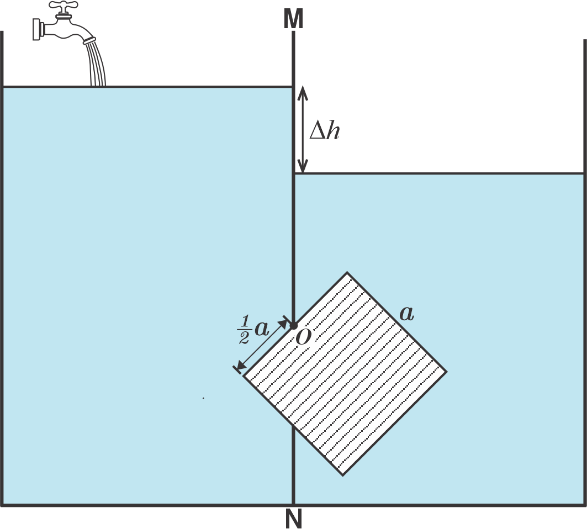
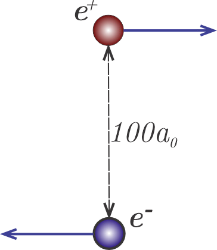
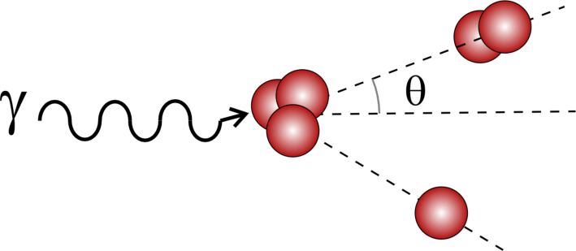

이 문제는 서로 독립적인 세 개의 소문제로 이루어져 있다.

그림 1a.
그림 1a와 같이 두 물 저수조가 연직 벽 MN으로 분리되어 있다. 왼쪽 저수조는 수원으로부터 물을 공급받을 수 있다. 두 수위의 최대 차이가 $\Delta h=$ 1.41 m를 넘지 않도록 보장해야 한다. 이를 위해 MN에 연직 크기 $a\sqrt{2}/2$인 틈을 내고, 한 변의 길이가 $a$인 고체 정육면체 블록으로 막았다. 블록의 밀도는 $3\rho_0$이고 $\rho_0$는 물의 밀도이다. 블록은 완전히 잠겨 있으며 점 $O$에서 벽에 고정되어 있고, 그림의 평면에 수직이고 점 $O$를 지나는 축에 대해 마찰 없이 회전할 수 있다.
T1-A1 [3.0점.] 허용되는 최대 수위 차를 넘지 않도록 보장하는 $a$의 값을 구하라.

그림 1b.
어느 순간, 양전자 $e^+$가 전자 $e^-$로부터 $100a_0$ 떨어진 위치에 있다. 그림 1b와 같이 그 순간 두 입자의 속도는 서로 반평행이며 두 입자를 잇는 선에 수직이다. 각 입자는 계의 질량중심에 대해 크기가 $\mu\hbar$인 각운동량을 가지는 것으로 알려져 있으며, $\mu$는 차원이 없는 수치 인자이다. $e^+$와 $e^-$ 사이의 유일한 상호작용은 정전기적 상호작용이라고 가정한다(두 입자는 질량 $m$이 같고 전하의 크기는 같으나 부호가 반대이다). 또한 이 계는 고립되어 있고 그 동역학은 고전적이며 비상대론적이라고 가정한다.
보어 반지름 $a_0$는 $a_0=4\pi\epsilon_0\hbar^2/(me^2)$로 주어진다.
T1-B1 [1.0점.] $\mu=4$이면 계는 속박되어 있다. 즉 두 입자가 계의 질량중심 주위로 닫힌 궤도를 그린다. $e^+$와 $e^-$ 사이의 최대 분리 거리를 $a_0$로 나타내어라.
T1-B2 [2.5점]. $\mu=\frac{15}{2}$이면 계는 속박되지 않는다. 즉 두 입자가 더 이상 계의 질량중심 주위로 닫힌 궤도를 그리지 않는다. 두 입자 사이의 분리 거리가 무한대로 갈 때 $e^-$에 대한 $e^+$의 상대 속도를 $\vec u_\infty$라 하자. $\vec u_\infty$와 $e^+$의 처음 운동 방향 사이의 각을 구하라. 답은 도(°) 단위로 쓰라.
힌트 1: 이 경우 원뿔 곡선 궤도의 이심률 $\varepsilon$은 다음과 같다.
여기서 $E$와 $L$은 각각 전체 에너지와 전체 각운동량의 크기이다. $k$는 쿨롱 상수 $k=1/(4\pi\epsilon_0)$이다.
힌트 2: 극좌표에서 원뿔 곡선의 방정식은 다음과 같다.

그림 1c.
각진동수 $\omega$인 광자가 정지해 있는 오존 분자 O3에 부딪혀, 그림 1c와 같이 산소 분자 O2와 산소 원자 O로 분해(해리)시킨다. 이 과정에서 광자는 흡수된다. $U_i$와 $U_f$를 각각 오존 분자와 산소 분자의 바닥상태 에너지라 하자. 이 계는 고립되어 있고 그 동역학은 고전적이라고 가정한다(퍼텐셜 에너지는 질량에 기여하지 않으며 산소 원자들의 운동은 비상대론적이다). 광자의 선운동량에는 $p=E/c$ 관계를 사용하라. 여기서 $E$는 광자의 에너지이다.
T1-C1 [2.5점]. 방출되는 O2의 운동량이 입사 광자에 대해 이루는 각이 $\theta$일 때, 이 각도로 해리가 일어나기 위해 필요한 최소 각진동수 $\omega_{\rm min}$을 구하라. 답은 $\hbar$, $c$, $\theta$, $\Delta U=U_f-U_i$, 그리고 산소 원자의 질량 $m$으로 나타내어라.
T1-C2 [1.0점]. $\theta=\pi/6$일 때 $\hbar\omega_{\rm min}-\Delta U$의 값을 계산하라. 답은 전자볼트(eV) 단위로 쓰라. $\Delta U=$ 1.10 eV, $m=$ 16.0 amu를 사용하라.
힌트: